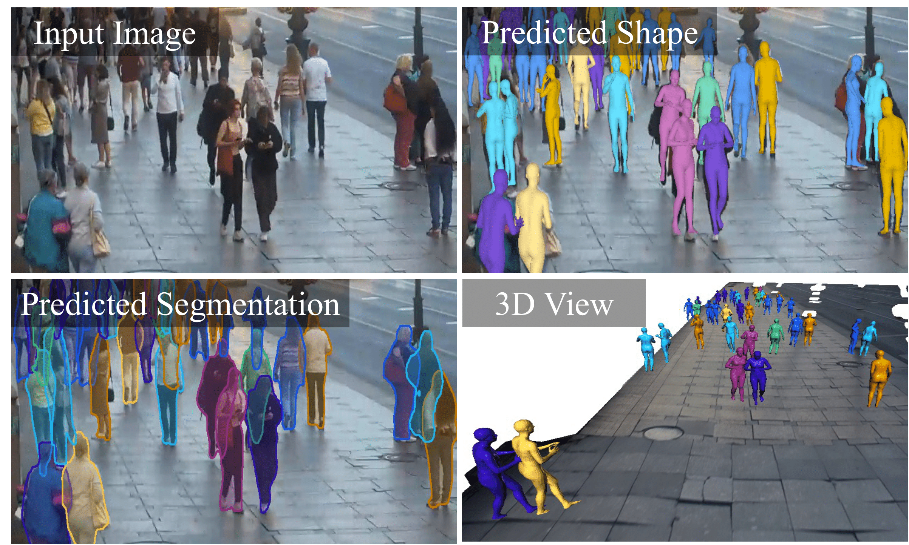
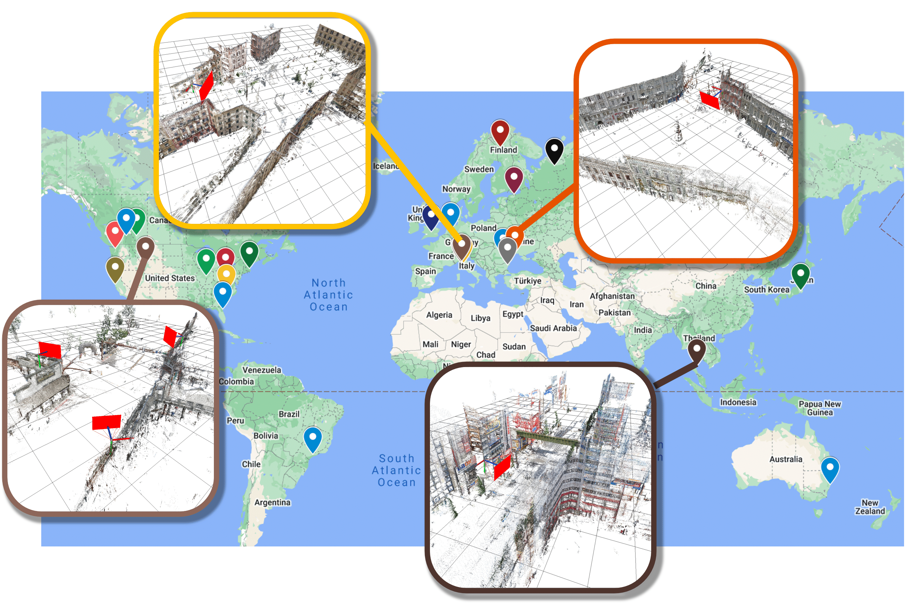
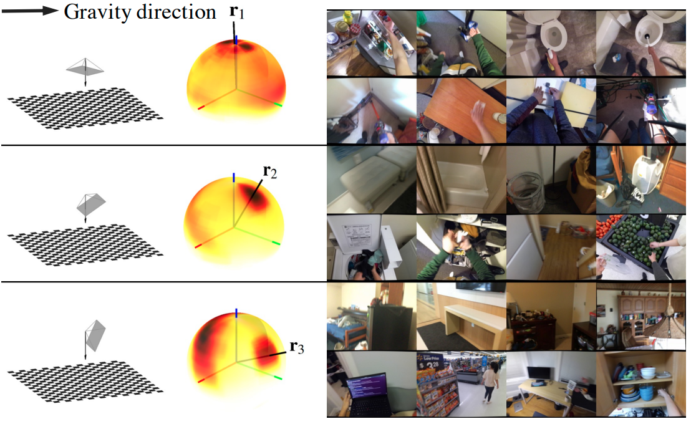
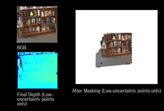
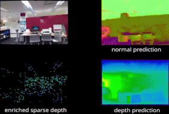

Publications
WALT3D: Generating Realistic Training Data from Time-Lapse Imagery for Reconstructing Dynamic Objects under Occlusion
Khiem Vuong,
N Dinesh Reddy,
Robert Tamburo,
Srinivasa G. Narasimhan
In CVPR 2024

Toward Planet-Wide Traffic Camera Calibration
Khiem Vuong,
Robert Tamburo,
Srinivasa G. Narasimhan
In WACV 2024

Egocentric Scene Understanding via Multimodal Spatial Rectifier
Tien Do,
Khiem Vuong,
Hyun Soo Park
In CVPR 2022 (Oral)

Deep Multi-view Depth Estimation with Predicted Uncertainty
Tong Ke,
Tien Do,
Khiem Vuong,
Kourosh Sartipi,
Stergios I. Roumeliotis
In ICRA 2021

Surface Normal Estimation of Tilted Images via Spatial Rectifier
Tien Do,
Khiem Vuong,
Stergios I. Roumeliotis,
Hyun Soo Park
In ECCV 2020 (Oral)

Deep Depth Estimation from Visual-Inertial SLAM
Kourosh Sartipi,
Tien Do,
Tong Ke,
Khiem Vuong,
Stergios I. Roumeliotis
In IROS 2020
